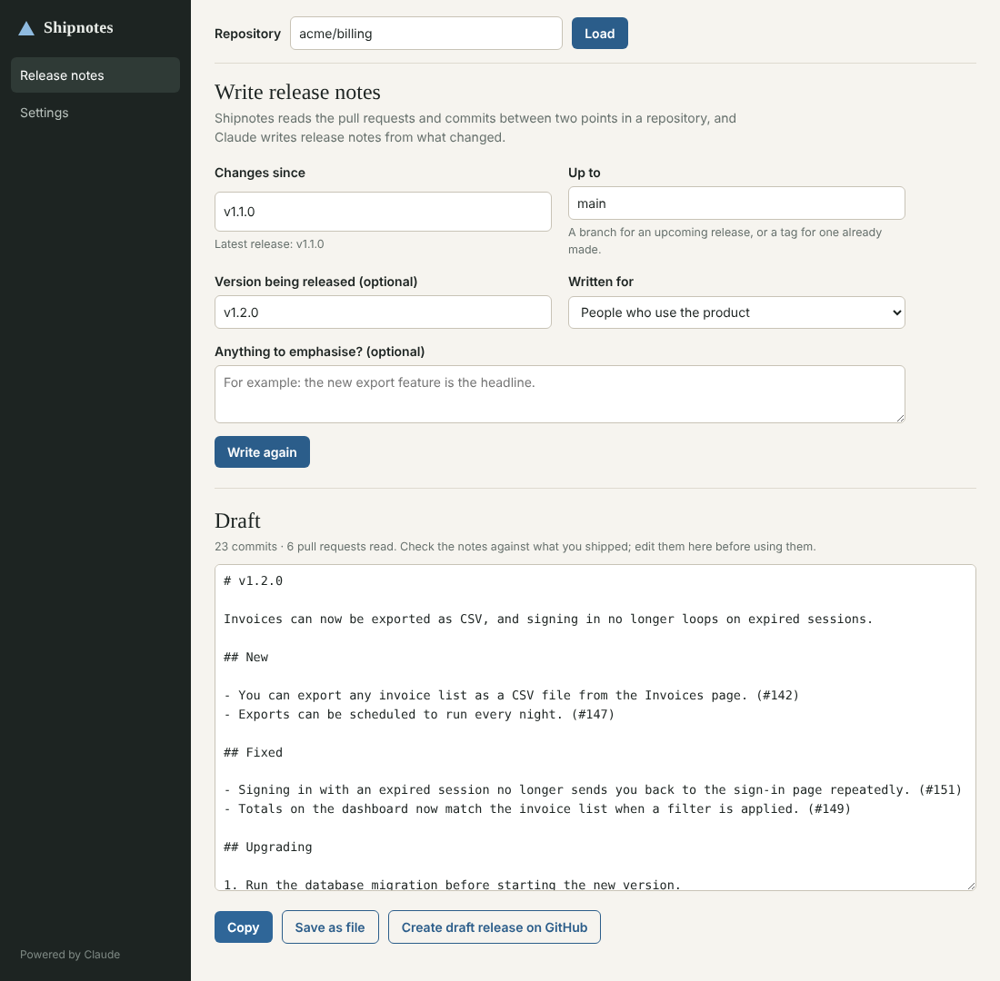

Early release · free and open source
Shipnotes
Release notes for your GitHub project, written by Claude from what actually changed. Pick two points in a repository's history and get notes you can edit and publish.

How it works
- Choose the rangePick a GitHub repository, where to start, usually your last release, and where to stop, usually your main branch.
- Claude reads the historyShipnotes gathers the merged pull requests and commits in that range, and Claude writes notes for the audience you choose: the people who use the product, or developers.
- Edit the draftThe notes open in an editor, grouped into what is new, what is fixed and what could break, with each item linked to its pull request.
- Use them your wayCopy them, save a Markdown file, or create a draft release on GitHub. Nothing is published until you publish it.
How it is built
- Powered by ClaudeThe notes are written by Anthropic's Claude models, using your own API key.
- Sticks to the recordClaude is told to describe only changes that appear in the history. You should still read the notes against what you shipped.
- No server of oursYour keys stay on your computer. The app talks only to GitHub and to Anthropic, and sends pull request and commit text, not your source code.
- FreeShipnotes is free to use and open source under the MIT licence. You pay Anthropic only for the notes you generate.
Availability
Version 0.1.0 is an early release for Windows 10 and later, 64-bit. Expect rough edges, and please report what you find.
Download the Windows installer Source code on GitHub
The installer is not code-signed yet, so Windows will warn that the publisher is unknown. You will need your own Anthropic API key and a GitHub access token.